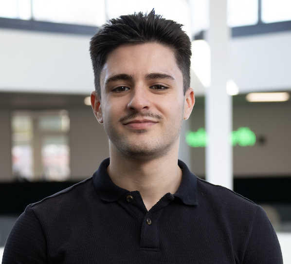

Aleksandar Todorov
M.Sc. Artificial Intelligence · University of Groningen
Teaching Assistant · AI Engineer at DataNorth

About
I am a Master's student in Artificial Intelligence and Applied Mathematics at the University of Groningen, where I also completed my Bachelor's degree in Artificial Intelligence with the highest distinction Summa Cum Laude and graduated first in my cohort. I am highly motivated by the concern that AI systems are becoming more capable faster than our conceptual and mathematical understanding of them. I am interested in research that tries to close this gap by studying learning systems from first principles rather than only through empirical scaling.
Beyond research and work, I try to maintain a balanced and healthy lifestyle, both physically and mentally. My cat, Beans (who you might spot on my GitHub profile picture), i.e., my unofficial co-researcher and mental health supervisor, plays an important role in keeping me grounded and reminding me to take breaks by ensuring I cannot hyperfocus on one thing for too long.
Research Interests
My research interests lie primarily in reinforcement learning, continual learning, and multi-agent systems, with a broader interest in optimization, strategic interaction, and deep learning in general. In terms of methodology, I like combining mathematical modeling with experiments, drawing on ideas from game theory, probabilistic modeling, systems and control, and convex optimization. Recently, I have been working increasingly with JAX, especially for reinforcement learning.
Currently, I am working on projects related to continual and reinforcement learning, and will be looking for a PhD position, ideally starting in spring or summer 2027.
Current Work
-
Visiting Research Scholar - KU Leuven
July 2026 - August 2026 · Leuven, BE
During the summer of 2026, I will have the opportunity to work as a visiting research scholar at KU Leuven, where I will be collaborating on a project related to continual learning through more efficient optimization. -
AI Engineer - DataNorth
March 2025 - present · Groningen, NL
I mostly try to build and automate stuff in a scalable way, ranging from custom document extraction models to computer vision solutions for manufacturing. My work spans the full stack, integrating Azure (including Azure Document Intelligence), LangChain, Terraform, the TypeScript/Python ecosystem (Next.js, Docker, Tailwind, FastAPI), and many other frameworks. -
Teaching Assistant - University of Groningen
September 2023 - present
Teaching has been something that I have always enjoyed, and I have been fortunate enough to teach more than 10 courses at the University of Groningen so far, both at a Bachelor's and Master's level and for both the Artificial Intelligence and Applied Mathematics programs, in the fields of optimization, machine and reinforcement learning, logic, AI engineering, signal processing, linguistics, and natural language processing.
For the academic year 2024-2025, I was also awarded the Teaching Assistant of the Year.